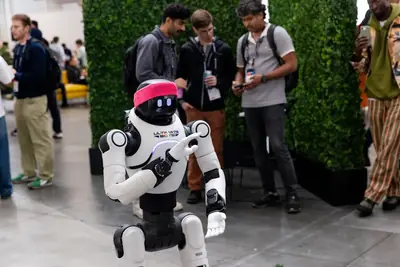
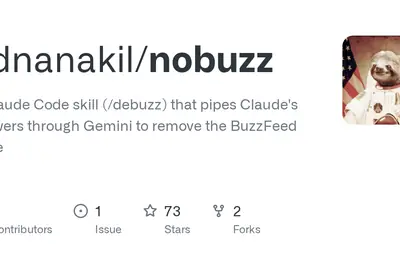
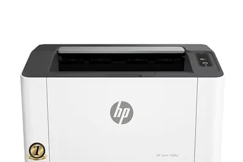
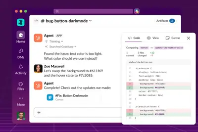
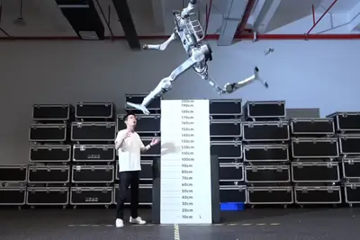
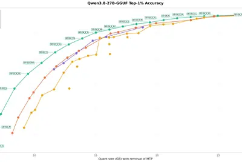

AI 每日新聞彙整
全部主題
其他
2 家媒體報導centerdatacenterdata
The Unlikely Place at the Center of China’s AI Boom
Cheap energy, abundant land, and proximity to Beijing have turned a city in Inner Mongolia into a crucial hub for data centers.
2 家媒體報導anthropicopussmut-machine
Anthropic’s Opus 4.6 is a smut-machine
Anthropic forbids its Claude models from generating sexually explicit content. But a series of tests conducted by TechCrunch found that it didn't take much to get past the restriction.

- TechCrunch AI Anthropic’s Opus 4.6 is a smut-machine
- INSIDE OpenAI 宣布零資料保留次日，Anthropic 傳讓企業把 Claude 資料留在自家機房
2 家媒體報導macchatgptimessages
ChatGPT's new Mac plugin analyzed my iMessages - and I found it surprisingly useful
ChatGPT can now analyze text messages on your Mac to reveal how you interact with others.
2 家媒體報導6001000funding
博通傳籌逾 600 億美元 AI 晶片融資，整體規模最高上看 1,000 億美元
按照目前討論中的金額計算，整體融資規模最高可能達到 1,000 億美元。
- INSIDE 博通傳籌逾 600 億美元 AI 晶片融資，整體規模最高上看 1,000 億美元
- TechOrange 科技報橘 Broadcom 再籌逾 600 億美元 AI 融資：晶片商為何開始替客戶解決「買算力」問題？
ls6a320suv
全新一代智己 LS6“陆上 A320”官宣 9 月见，定位“家庭 SUV”
IT之家 8 月 22 日消息，2026 成都车展 8 月 21 日开幕，上汽集团宣布全新一代智己 LS6“陆上 A320”将于 9 月亮相，号称“陆上 A320”。 据介绍，该车是航空同源理念打造的家庭 SUV，率先进入航空级安全时代。全系标配 NEO 三电架构、全线控底盘、IM CLAW 智能体、超级头等舱。 IT之家注意到，目前在售的新一代智己 LS6 车型于去年 9 月上市，纯电版上市权益价 19.79 万元起，增程版上市权益价 20.29 万元起。 在售的新一代智己 LS6 定位超级大五座智能 SUV，首搭智己“恒星”超级增程，综合续航达 15
macbookpro200
苹果 14 英寸 M6 MacBook Pro 前瞻：12 核 GPU、200GB/s 内存带宽、升级均热板散热
IT之家 8 月 22 日消息，科技媒体 AppleInsider 昨日（8 月 21 日）发布博文，汇总梳理苹果下一代入门款 14 英寸 MacBook Pro 的规格信息，产品代号为 J804。 发布日期方面，苹果公司可能会在 2026 年年底或 2027 年年初发布。不过 有消息称该 MacBook Pro 的产品发布间隔是最短的 ，后续由 M7 机型（代号 K104）接替，并迎来机身重设计。 型号方面，入门款 M6 MacBook Pro 使用 J804，延续了 M5 的 J704 和 M4 的 J604 命名方式。高端 OLED 触控屏 Mac
企業 AI 導入為何卡關？主管親自示範與打造「容錯文化」是落地關鍵
人工智慧加速進入企業流程之際，如何讓員工真正用起來，正成為比採購工具更棘手的課題。專家指出，許多組織已完成導入 […]
- 科技新報 TechNews 企業 AI 導入為何卡關？主管親自示範與打造「容錯文化」是落地關鍵
token
【OpenAI 企業 AI 導入實證】高管偏好決策概述與合規查詢，推動「流程再造」與「人機磨合」才是轉型核心
企業決策者引進 AI 面臨的難題之一是，導入 AI 工具後，能自動且即時轉化為組織的實質生產力嗎？OpenAI 聯合哥倫比亞商學院與賓州大學華頓商學院，發佈實證研究論文《How Organizations Use AI: Evidence from ChatGPT》，嘗試為這個問題提供解答。 研究將 ChatGPT Enterprise 的帳戶使用紀錄，安全且去識別化地連結至組織內部的員工職能角色、訊息層級任務分類，以及美國上市公司財務數據庫 Compustat；一共分析了超過 1,500 家組織，以及超過 1,700 萬條真實去識別化對話訊息。 依據研
- TechOrange 科技報橘 【OpenAI 企業 AI 導入實證】高管偏好決策概述與合規查詢，推動「流程再造」與「人機磨合」才是轉型核心
peoplebuttonclicked
Over 1 million people have clicked LinkedIn’s AI slop button
LinkedIn actually announced a "Seems like AI slop" button on July 30th, and the company says that a lot of people have already used it. According to a Thursday post from chief product officer Hari Srinivasan, "over a million people" have clicked on the button, which is accessible
besttestedsamsung
The best large tablets of 2026: Expert tested and reviewed
We tested the best big-screen tablets from Apple, Samsung, Microsoft, and more, to help you choose the right one.
modelshowedharness
Nvidia just showed that the harness, not the AI model, is now the real hero
Nvidia research shows that AI agents can perform well, and not go off the deep end, through fine-tuning, even if the AI model isn't that great at the task.
developerscodingaddictive
80% of developers find AI coding more addictive than helpful
A new Coddy Developer Survey found that four in five developers, 80%, say their use of AI has felt more like a dependence than an advantage.
sonossmartvoice
Sonos' improved Voice Control points to an intriguing smart home future
Reports suggest that Sonos is preparing to compete in the evolving smart speaker market, readying new hardware and an AI-backed overhaul of its voice assistant.
walmartacceptpay
Walmart will finally accept Apple Pay and Google Pay. Here's what's changing
Walmart was one of the last big retailers to not accept tap-to-pay. Now what happens to Walmart Pay?
seniormemberingole
This IEEE Senior Member Develops AI Tools for E-Commerce Sites
Balaji Ingole rarely saw televisions while growing up in Udgir, India. No one in the small Maharashtra village had computers or phones. Only one household owned a television, and neighbors often gathered there to watch shows together. Ingole never even saw a computer growing up.
- IEEE Spectrum AI This IEEE Senior Member Develops AI Tools for E-Commerce Sites
agentsamazonaws
How AWS Marketplace is using AI agents to meet the rising demand for AI agents
Increasingly, AI agents are handling the nitty-gritty admin and due diligence tasks, but agent-powered marketplaces won't replace live human sales reps or engineers anytime soon.
llmhttpx0.32.1
llm 0.32.1
Release: llm 0.32.1 Fresh installs of LLM stopped working the other day because the OpenAI Python library dropped its usage of httpx , and it turned out LLM depended on that library but only installed it via a transitive openai dependency. This dot-release fixes that for the mome
- Simon Willison llm 0.32.1
llm-openrouter0.7llm
llm-openrouter 0.7
Release: llm-openrouter 0.7 Now that this plugin is compatible with LLM 0.32 it works much better with reasoning LLMs available through OpenRouter. Updated for compatibility with LLM 0.32 . Models now use OpenRouter's implementation of the Responses API . Three new server-side to
- Simon Willison llm-openrouter 0.7
cgm-gmberkeley
AI 幾分鐘搞定地震模擬，柏克萊實驗室新框架 CGM-GM 曝光
美國勞倫斯柏克萊國家實驗室（Berkeley Lab）宣布，研究團隊開發出一套名為 CGM-GM 的機器學習框 […]
- 科技新報 TechNews AI 幾分鐘搞定地震模擬，柏克萊實驗室新框架 CGM-GM 曝光
actuatefoxglove2025
美国硅谷大谈机器人未来，现场主角却来自中国
8 月 21 日，据《商业内幕》报道，旧金山机器人大会 Actuate 吸引了约 1500 名投资者、创业者和工程师参与，但现场展示的机器人数量却远少于预期。 在人工智能从软件领域向现实世界延伸的背景下，机器人行业正迎来投资热潮，但硬件供应不足、训练数据短缺以及供应链限制，成为行业进一步发展的关键挑战。 硅谷最热门的机器人技术大会上为数不多的机器人之一 报道称，Actuate 大会由机器人软件公司 Foxglove 主办，今年参会人数较 2025 年增长约 3 倍。Foxglove 联合创始人兼 CEO Adrian Macneil 表示，如果不受场地限

meta
对 AI 抵触情绪上升：美国年轻人越来越讨厌 AI，硅谷高管爆发公开分歧
据《连线》报道，随着人工智能快速进入工作、教育和日常生活，美国社会对 AI 的抵触情绪正在上升。 最新调查显示，超过一半的 30 岁以下美国人对 AI“担忧多于兴奋”，这一比例相比五年前增加了 24%；超过 70% 的受访者认为，AI 将导致就业岗位减少。 《连线》指出，硅谷正在试图解释这股反 AI 情绪，但部分科技公司领导者可能没有真正理解公众担忧的根源。 公众对 AI 的不安已经不只集中在就业和数据中心建设。 相关调查显示，美国人还担忧 AI 影响年轻人建立有意义的人际关系、削弱学生的批判性思维能力，同时认为科技公司应该向作品被用于训练 AI 模型的
foldpixelreason
There's one big reason I'll choose the Pixel 11 Pro Fold over the Galaxy Z Fold 8
It hit me while on vacation: The Pixel has something the Z Fold 8 doesn't, and it's a game-changer.
mattwebbquoting
Quoting Matt Webb
After I released version 1.0, I figured I would have to do the rotations myself. So I sat down with ChatGPT and I didn’t get it to write the code, but I got it to educate me. With a patient, interactive tutor, I was able to finally do what I hadn’t by reading books and asking mat
- Simon Willison Quoting Matt Webb
analysisrootcause
Stop Hunting, Start Solving: Accelerating Root Cause Analysis with Agentic AI
About this Webinar Turn Yield Excursions into Faster, More Confident Root Cause Analysis When a yield issue emerges, the answer rarely lives in a single system. Critical clues are spread across metrology data, tool traces, chemical analysis, and facilities systems, while growing
articleclaudettebuzzfeed
Claudette: Make Claude stop talking like a BuzzFeed article
Article URL: https://github.com/adnanakil/nobuzz/blob/main/README.md Comments URL: https://news.ycombinator.com/item?id=49388752 Points: 177 # Comments: 127

- Hacker News (100+) Claudette: Make Claude stop talking like a BuzzFeed article
starcloudraisesorbital
Starcloud raises $250 million for orbital data centers as launch options dry up
There's about to be a big fight to secure access to space.
investigatingdoja16z.
The DOJ is investigating a16z. What does this mean for venture capital?
Andreessen Horowitz has two partners sitting on the boards of companies that now compete with each other: Ben Horowitz at Databricks and Martin Casado at Fivetran. Nothing too scandalous on the surface, except the Department of Justice has reportedly been investigating the arrang
wisprflowdictation
I tried the free Wispr Flow voice dictation tool everyone's talking about - and I'm hooked
Designed for Windows, MacOS, iOS, and Android, Wispr Flow is a pleasure to use compared with other voice dictation apps. Here's how.
creatorsvideosmajor
Major YouTube creators are facing backlash for accepting AI money
Over the past few days, a number of prominent filmmaking content creators including Matti Haapoja and Sam "Kold" Kolder have posted videos of themselves demonstrating what's possible with AI platform Higgsfield. The videos highlight Higgsfield's recently added Seedance 2.5 functi
iponand330
国产 NAND 龙头长江存储冲刺科创板：IPO 审核状态变更为已受理，拟融资 330 亿元
IT之家 8 月 21 日消息，上海证券交易所网站显示，长江存储控股股份有限公司（IT之家下称“长江存储”）首次公开发行股票并在科创板上市的 IPO 审核状态已变更为“已受理”。 公司拟融资金额为 330 亿元，保荐机构为中信证券和中信建投 。 此前 8 月 19 日，长江存储 IPO 辅导状态刚由证监会官网公示变更为“辅导验收”。中信证券与中信建投于当日签署了《辅导工作完成报告》。公司于 2026 年 5 月 19 日在湖北证监局完成 IPO 辅导备案登记，至验收通过全程约三个月，创下半导体企业 IPO 辅导速度纪录。 招股书显示，长江存储自 2024
atarieveonline
From Atari to EVE Online: Building on 15 Years of AI Research in Games
Google DeepMind partners with game studios to prototype breakthrough AI gameplay.
iec1906
创历史新高！我国 44 名专家斩获“IEC 1906 奖”
IT之家 8 月 21 日消息，据央视新闻今天报道，国际电工委员会（IEC）近期公布“IEC 1906 奖”获奖名单。我国共有 44 名专家荣膺该奖项，获奖人数创历史新高，再次彰显我国在国际电工标准化领域的技术实力与不断攀升的全球影响力。 2026 年，全球共有来自 26 个国家的 231 名专家获得该奖， 我国获奖人数占获奖总人数的 19%。 我国的 44 位获奖专家来自 33 个领域，这些领域与国家“十五五”规划战略方向高度协同。 其中，新型电力系统与新能源领域占比约 32%，覆盖电力系统运行与控制、特高压直流输电、柔性输电与电力电子、太阳能光热发电
low-techsolutiondefense
A low-tech solution from the past may be your best defense against AI deepfakes
AI-enabled identity theft is getting too sophisticated to have predictable tells anymore, so experts recommend answering with a seemingly old-fashioned approach.
windowsjoinseurope
China joins Europe in scrapping Windows for Linux
The specialized Chinese version of Windows was already scheduled for retirement in February 2027, but now its end-of-life date has been moved up.
mehtalaser1008
青少年开发者借助 Claude Code AI 编程工具，成功为惠普打印机冷门机型开发出苹果 macOS 原生驱动
IT之家 8 月 21 日消息，据外媒 neowin 报道，一名青少年开发者 Kuber Mehta 利用 Anthropic 的 Claude Code，为一款缺乏 macOS 官方支持的惠普激光打印机开发出了原生驱动，展示了 AI 编程工具在解决冷门硬件兼容问题上的潜力。 ▲ HP Laser 1008a 据报道，Kuber Mehta 发现自己的惠普打印机 HP Laser 1008a 无法在 Mac 上正常使用后，便让 Claude Code 充当 AI 编程智能体，协助分析现有软件、逆向打印流程、编写 / 修正代码，最终花了 4 个小时便让驱动

slackcodemicrosoft
Slack推出Slack Code，讓團隊與AI代理人共同開發程式
Salesforce周四（8/20）推出Slack Code，讓企業團隊可在Slack中與AI程式代理人共同開發、檢視及修改程式碼。 Slack過去已能整合各種AI代理人，但相關功能主要用於對話及個別任務。隨著Claude Code、Devin、GitHub Copilot及ChatGPT等代理人開始處理更複雜的程式開發，開發者與AI的討論及修改過程通常只有自己看得到，其他團隊成員難以同步參與。

glassesmetaexplodes
As demand for Meta AI glasses explodes, it’s harder to avoid creepy recordings
Ars looks at Zuckoff, the latest free app detecting Meta AI glasses amid privacy backlash.
intel
宇樹科技王興興：機器人軟體最快還要 2 至 3 年突破，泛化仍是關鍵瓶頸
宇樹科技（Unitree Robotics）掛牌上海科創板隔日，創辦人王興興迎來上市後首次公開演講。相較首日股價大漲逾 460% 的市場熱度，他談起人形機器人的實際能力時，給出的判斷相對審慎，指出機器人距離大規模進入工廠與家庭，仍有幾道關卡尚未跨過。 在 2026 世界機器人大會上，王興興首先把問題指向效率與泛化能力。他表示，機器人現在已能完成部分簡單裝配，但效率仍低於人類；一項任務即使在固定場景充分蒐集資料與訓練後，成功率可以逼近 100%，只要更換物品、環境或任務，表現就可能明顯下滑，碰到新工作往往還得重新訓練。他因此把泛化能力不足，視為當前全球機器

- TechOrange 科技報橘 宇樹科技王興興：機器人軟體最快還要 2 至 3 年突破，泛化仍是關鍵瓶頸
jeffdeangoogle
前 Google 首席科學家 Jeff Dean 談 AI 研究：廣泛閱讀論文，發現新連結
前 Google DeepMind 首席科學家迪恩（Jeff Dean）離開公司後，日前首度出席公開演講，向準 […]
- 科技新報 TechNews 前 Google 首席科學家 Jeff Dean 談 AI 研究：廣泛閱讀論文，發現新連結
dynamicv3.03.0
Unsloth更新Dynamic v3.0 GGUF量化方法，相同檔案尺寸下提高量化模型精度
開源AI新創Unsloth更新Dynamic v3.0 GGUF量化方法，先推出Qwen3.8-27B的Dynamic v3.0量化版本。新版重新調整量化校準資料、模型層選擇方式與量化策略，希望在模型檔案大小不變的情況下，減少量化造成的精度損失。Unsloth自行測試顯示，相同檔案尺寸下，部分Dynamic v3.0版本的首選輸出（Top-1）準確率比其他量化版本高逾10%。
